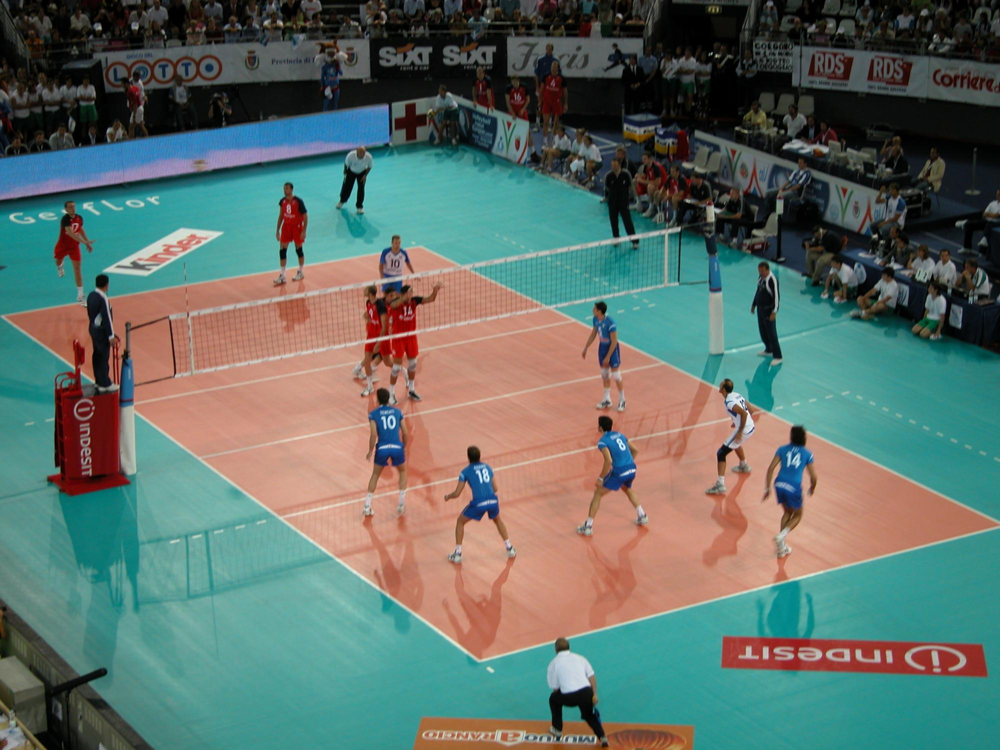

TP 03 - LISTAS
Ivan Ulloa WEB I 4º1
1.1- ¿Para qué sirve la etiqueta ul? Dar un ejemplo en donde lo utilizarías.
ul de "unordered list" lista no ordenada . crea una lista no ordenada. Ejemplo:
Países del mundo
1.2- ¿Para qué sirve la etiqueta ol? Dar un ejemplo en donde lo utilizarías.
Es todo lo contrario al ul, esta etiqueta en vez de crear una lista desordenada, a su inversa, crea una lista
ordenada. Ej:
- River EL MAS GRANDE
- Boca
- Independiente
- Racing
1.3- ¿Para qué sirve la etiqueta dl? Dar un ejemplo en donde lo utilizarías.
La etiqueta DL representa una lista descriptiva. El elemento encierra una lista de grupos de términos
(especificados con el uso del elemento y de descripciones)
EQUIPOS DE LA LIGA
- River Plate
- El club Atletico River Plate identificado por sus colores blanco, rojo y en menor escala negro, River Plate
es
uno de los clubes más
exitosos del mundo con un total de 72 títulos en su palmarés. Es el club más ganador de la Primera División
de Argentina, con 38 campeonatos conseguidos.
- Independiente
- El Club Atlético Independiente, o simplemente Independiente, es una entidad deportiva y educativa argentina,
cuya sede y estadio están localizados en la ciudad de Avellaneda, del aglomerado del Gran Buenos Aires. El
club
es reconocido principalmente por su fútbol profesional, que milita en la Primera División de Argentina y es
considerado como uno de los cinco grandes del fútbol argentino.
1.4- ¿Para qué sirve la etiqueta li? Dar un ejemplo en donde lo utilizarías.
El elemento li del ingles "item list" o elemento de lista declara cada uno de los elementos de una lista.
- hola
- como estas
- todo bien
1.5- Crea una lista desordenada con tres elementos (li) que contengan nombres de países de América del Sur.
1.6- Crea una lista ordenada con cinco elementos (li) que contengan los días de la semana en orden alfabético.
- Lunes
- Martes
- Miercoles
- Jueves
- Viernes
1.7- Anida una lista desordenada dentro de otro elemento li de otra lista desordenada para crear una lista
anidada de frutas y verduras.
Frutas
Verduras
1.8- Crea una lista ordenada, respetando las negritas y el subrayado, que contenga los siguientes pasos para
hacer una tarta de manzana: a: Pelar y cortar las manzanas en rodajas finas. b: Mezclar la canela, el azúcar y
la harina en un tazón. c: Colocar la masa de la tarta en un molde para horno. d: Colocar las manzanas sobre la
masa de la tarta. e: Hornear la tarta durante 45 minutos.
TORTA DE MANZANA
- Pelar y Cortar las manzanas en rodajas finas.
- Mezclar la canela, el azucar y la harina en un
tazon.
- Colocar la masa de la tarta en un molde para horno.
- Colocar las manzanas sobre la masa de la tarta.
- Hornear la tarta durante 45 minutos.
1.9 Existe un atributo que se aplica a la etiqueta ol para ver la lista en orden descendente en vez de
ascendente,
¿cuál es ese atributo? Utilizar la referencia de atributos de HTML
El atributo que utilizamos es el "reversed"
1.10 Utilizando el atributo anterior, crear una lista con cuatro elementos que contengan nombres de películas de
terror de forma descendente.
- El conjuro
- La llorona
- La monja
- Chucky
1.11 Elegir un gusto particular y realizar una lista descriptiva de por lo menos 5 elementos. El título debe
tener un enlace que lleve a un sitio de referencia. Utilizar en las descripciones etiquetas: strong, em, img.
DEPORTES
- FUTBOL
- Juego entre dos equipos de once jugadores cada uno, cuyo objetivo es hacer
entrar en la portería contraria un
balon que no puedeser tocado con las manos ni con los brazos, salvo por el portero
en
su area de meta.

- VOLEY
- El Voleibol, balonvolea o simplemente voley, es un deporte donde dos equipos
se enfrentan sobre un terreno
de juego liso separados por una red central, tratando de pasar el balón por encima de la red hacia
el suelo
del campo contrario.

- Rugby
- El Rugby es un deporte
donde participan dos equipos, actuando conforme a las reglas establecidas y con espíritu
deportivo, que llevando o pasando un balón ovalado, tratan de hacer el mayor número de puntos posibles,
evitando que puntúe el equipo contrario